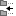
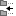
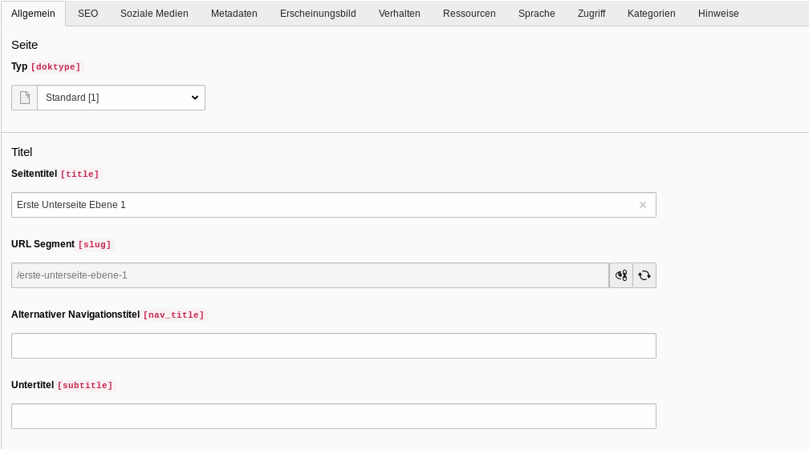
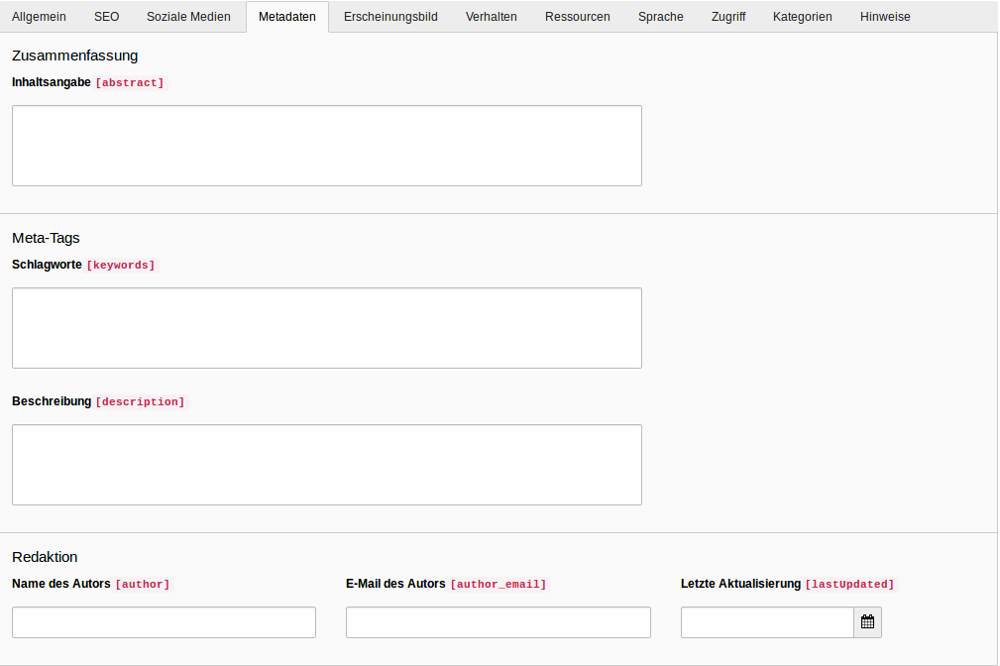
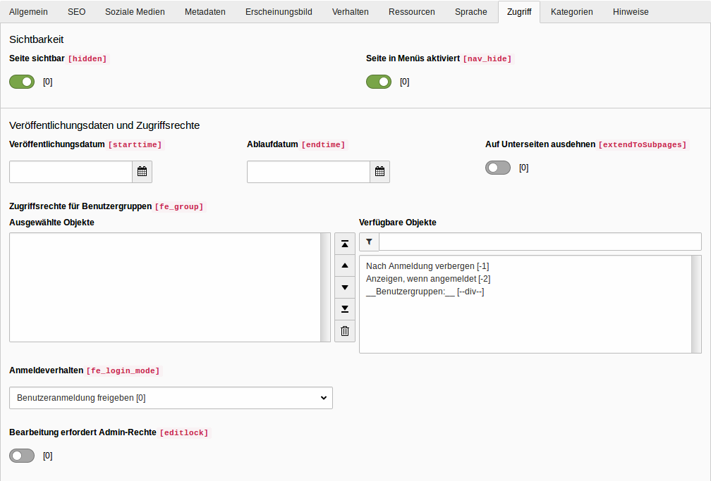
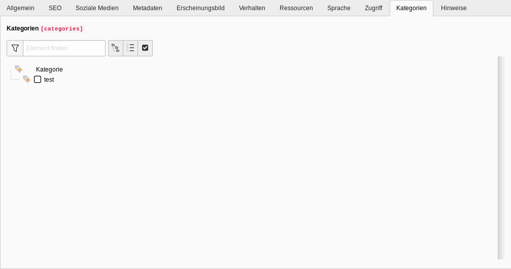
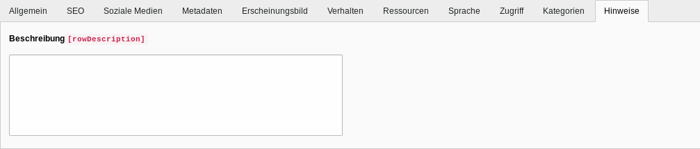
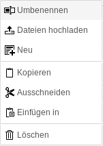
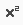
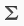

1. Einleitung
Das vorliegende Handbuch liefert eine allgemeine Einführung zum Umgang mit dem Content Management System (CMS) TYPO3 für Redakteure. Die ersten fünf Kapitel beschreiben dabei projektunabhängig die TYPO3 Version 9, während die Kapitel sechs und sieben auf projektspezifische Besonderheiten eingehen. Kapitel 9 beschreibt dann wiederum allgemein wie Dateien, Bilder und Videos verwaltet werden. Im letzten Kapitel Glossar finden Sie eine Übersicht über die geläufigsten Symbole und deren Bedeutung im Backend aufgelistet.
| Das Handbuch ist als Nachschlagewerk konzipiert, um den Redakteur bestimmte Fragen zu beantworten. Deshalb gibt es an manchen Stellen Dopplungen, die bei chronologischem Durcharbeiten des Handbuchs nicht notwendig wären |
1.1. Was ist TYPO3?
TYPO3 ist ein Open-Source Content-Management-System. Open-Source bedeutet das der Quelltext für jeden frei verfügbar ist und von jedem für seinen Zwecke abgeändert werden kann. TYPO3 ist hauptsächlich in der Programmiersprache PHP geschrieben. Die Entwicklung wurde 1997 von Kasper Skarhoj begonnen und wird seit 2001 als Open-Source Projekt von vielen Entwicklern vorangestrieben. Mittlerweile ist die aktuellste Version TYPO3 11.5. Diese wurde am 05.10.2021 veröffentlicht.
1.2. Die Begriffe "Backend" und "Frontend"
Mit dem Begriff "Backend" wird die Benutzeroberfläche bezeichnet, in welcher verschiedene Aufgaben zur Konfiguration der Webseite erledigt werden könne. Darunter fallen beispielsweise das Anlegen, Berabeiten und Löschen von einzelnen Seiten oder das Hinzufügen von Bilder und verschiedenen Inhaltselementen. Der Begriff "Fronted" meint hingegen die Webseite an sich. Also das, was der Besucher sieht, wenn er eine bestimmte Seite ansteuert.
1.3. Der Cache
TYPO3 verwendet verschiedene Caches. Caches sind Zwischenspeicher, die bestimmte Daten abspeichern, da ansonsten bei jeder Verwendung eine Neuberechnung notwendig wäre. So werden beispielsweise die Inhalte einer bestimmte Seite zwischen gespeichert, um zu verhindern, dass für jeden neuen Besucher der Seite, neu berechnent werden muss, welche Inhalte die Seite anzeigen soll. Daher kann es manchmal notwendig sein, den Frontend-Cache zu löschen, damit eine Änderung an den Inhhaltselementen auch angezeigt wird.
1.4. Optimale Browser
Grundsätzlich kann das Backend in folgenden, aktuellen Versionen der Browser betrieben werden:
-
Chrome
-
Firefox
-
Safari
-
Mircosoft Edge
Am empfehlenswertesten sind dabei die aktuellsten Versionen von Chrome und Firefox, da diese erfahrungsgemäß am wenigsten Probleme verursachen.
1.5. Vorgehen bei der Inhaltspflege
2. Das Backend
2.1. Login
Der Zugang zum TYPO3 Backend ist durch einen Login-Maske beschränkt. Diese erreichen Sie, wenn Sie zu der vollständigen Adresse der Webseite (z.B. www.beispiel-webseite.de) noch /typo3/ hinzufügen. Also: 'www.beispiel-webseite.de/typo3/. Um sich anzumelden, müssen Sie Ihren Benutzernamen und Ihr Passwort angeben. Unterhalb des Loginbereichs sind Systemnachrichten hinterlegt, in welchen zum Beipiel hinterlegt ist, zu welchen Zeiten Wartungsarbeiten durchgeführt werden. |
2.2. Übersicht
-
A = Modulleiste
-
B = Navigationsleiste
-
C = Arbeitsbereich
-
D = Kopfleiste
2.3. Modulleiste
Der Zugriff auf die einzelnen Module ist abhängig von den Rechten, die der einzelne Redakteur besitzt. Administratoren haben Zugriff auf alle verfügbaren Module.
2.4. Überblick
|
2.4.1. Seite
In diesem Modul können Sie die Seiten anlegen, bearbeiten und löschen. Im Arbeitsbereich können Sie außerdem Inhaltselemente auf den jeweiligen Seiten anlegen, bearbeiten und löschen. Eine genauere Beschreibung Ihrer Möglichkeiten finden Sie in den Kapiteln Mit Seiten arbeiten und mit Mit Inhaltselementen arbeiten.
2.4.2. Anzeigen
Mithilfe dieses Moduls können Sie sich anzeigen lassen wie die einzelnen Seiten im Frontend für den Besucher der Webseite aussehen. Dabei können Sie zwischen verschiedenen Formaten und Größen wechseln, um beispielsweise zu prüfen, wie die Seite ausgegeben wird, wenn Sie in einem Smartphone oder Tablet aufgerufen wird.
2.4.3. Liste
In diesem Modul finden Sie Seiten, Inhaltselemente und Datensätze in Tabellenform dargestellt. Sie können hier ebenso wie im Modul Seite Seiten anlegen, berbeiten und löschen. Darüber hinaus ist dasselbe auch mit Inhaltselementen möglich. Im Gegensatz zum Seiten Modul können Sie je nach Ihren Benutzerrechten auch noch andere Datensätze anlegen. Dazu zählen beispielsweise Kategorie, News-Datensätze oder Datensätze für andere Erweiterungen. Meistens sind im Seitenbaum spezielle Ordner angelegt, die für genau eine Art dieser Datensätze bestimmt sind.
2.4.4. Dateiliste
Innerhalb diese Modul können Sie die notwendigen Dateien für Ihre Webseite verwalten. Da es bei vielen Dateien sehr schnell unübersichtlich wird, gibt es die Möglichkeit Ordner anzulegen. Somit kann eine übersichtliche Struktur angelegt werden, um Dateien und Bilder möglichst schnell zu finden. Eine genauere Beschreibung finden Sie im Kapitel Mit Dateien und Bildern arbeiten
2.4.5. Einstellung
Wenn Sie mit einem Mausklick auf Ihren Nutzername in der Kopfleiste klicken, öffnet sich eine Anzeige, in welcher Sie neben der Möglichkeit zum Abmelden aus Ihrem Account auch auf Ihre Benutzereinstellung zugreifen können. Je nach Benutzerrechten, können Sie hier beispielsweise Ihren Namen, E-Mail-Adresse oder Ihr Passwort ändern. Mit Klick auf Speichern werden Ihre Änderungen übernommen.
2.5. Navigationsleiste
In diesem Bereich wird die jeweilige Navigation des ausgewählten Moduls angezeigt. Im Modul Seite wird beispielsweise der Seitenbaum der Webseite angezeigt. Je nach Rechten des Redakteurs können hier auch nur einzelnen Seitenbäume oder Seiten der Webseite angezeigt werden.
2.5.1. Der Seitenbaum
Den Seitenbaum kann man sich wie einen Baum mit Ästen, die wiederum Äste haben können, welche wiederum Äste haben können, usw. vorstellen. An oberster Stelle steht die Hauptseite, von welcher alle anderen Seiten ausgehen. Jede Seite kann dabei mehrere Unterseiten besitzen, welche wiederum Unterseiten besitzen können. |
|
2.6. Arbeitsbereich
In diesem Bereich werden je nach ausgewähltem Modul unterschiedliche Dinge angezeigt. Im Modul Seite sieht man beispielweise die Inhaltselemente auf der jeweiligen Seite, während man im Modul Dateiliste den Inhalt des ausgewählten Ordners sieht.
2.7. Kopfleiste
Die Kopfleiste stellt verschiedene Funktionen und Informationen bereit. Mit dem zur Verdeutlichung blau markierten Bereich können Sie die Modulansicht auf- und zuklappen. Im zugeklappten Zustand sind nur die Symbole der jeweiligen Module zu sehen. Mit Klick auf den hier grün markierten Bereich kann der Seitenbaum verborgen bzw. angezeigt werden. Im Modul Dateienliste kann damit analog der Verzeichnisbaum verborgen bzw. angezeigt werden.
Im Bereich mit dem TYPO3 Logo wird der Name der Webseite und die verwendete TYPO3 Version angezeigt (im Beispielbild 9.5.8). Hinweis: In Ihrer TYPO3 Installation kann ein anderes Logo statt des TYPO3-Logos angezeigt sein (beispielsweise das Logo Ihrer Organisation).
Mit Klick auf werden Ihnen die Ansichten angezeigt, welche Sie als Lesezeichen markiert haben. Rechts neben wird Ihnen der Name Ihres Benutzersaccounts und Ihr Nutzerbild angezeigt. Je nach Ihren Benutzerrechten können Sie hier mit Klick auf Ihren Namen die Benutzereinstellung öffnen (siehe 2.4.5 Einstellung). Ganz rechts in der Kopfleiste befindet sich noch die Suche, mit welcher Sie nach Seiten, Inhaltselementen, Dateien oder Datensätzen suchen können.
3. Mit Seiten arbeiten
3.1. Seitentypen
Je nach Ihren Benutzerrechten werden Ihnen verschiedene Seitentypen angezeigt. Grundsätzlich ist für die meisten Redakteure nur die Standard Seite relevant.
-
 Wurzel-Seite: Normale Standard Seite, welche den Anfang eines Seitenbaums darstellt.
Wurzel-Seite: Normale Standard Seite, welche den Anfang eines Seitenbaums darstellt. -
Standard: Stellt die normale Standard Seite dar.
-
Backend-Benutzerbereich: Wird für Seiten benutzt, die nur im Backend angesehen werden können.
-
Verweis: Beinhalten einen Link/Verweis auf eine andere, interne Seite.
-
Einstiegspunkt: Verweist ebenso wie der Verweis auf eine andere Seite.
-
Link zu externer URL: Wird benutzt, um einen Verweis/Link auf eine externe Seite hinzuzufügen.
-
 Ordner:
Wird benutzt, um Datensätze abzulegen (z.B. Artikel Datensätze).
Ordner:
Wird benutzt, um Datensätze abzulegen (z.B. Artikel Datensätze). -
 Papierkorb:
Kann als Ablagestelle für Datensätze und für Seiten, die nicht mehr genutzt werden, aber noch nicht gelöscht werden sollen gebraucht werden.
Papierkorb:
Kann als Ablagestelle für Datensätze und für Seiten, die nicht mehr genutzt werden, aber noch nicht gelöscht werden sollen gebraucht werden. -
Trennzeichen für Menü: Wird häufig zur optischen Strukturierung des Seitenbaums genutzt. Ansonsten kann es genutzt werden, um ein Trennzeichen in einem Seitenmenü zu repräsentieren.
3.2. Symbole im Seitenbaum Arbeitsbereich
-
 : Blendet alle möglichen Seitentypen ein.
: Blendet alle möglichen Seitentypen ein. -
: Öffnet ein Suchfeld, in welchem der Seitenbaum mithilfe eines Suchbegriff gefiltert werden kann.
-
 :
Aktualisiert den Seitenbaum.
:
Aktualisiert den Seitenbaum.
3.3. Seitenkontextmenü
-
Ansehen: Zeigt eine Seite im Frontend an.
-
 Bearbeiten: Öffnet das Seitenformular zur Bearbeitung einer Seite.
Bearbeiten: Öffnet das Seitenformular zur Bearbeitung einer Seite. -
Neu:Neue Seite anlegen.
-
Info: Zeigt Informationen über eine Seite an.
-
 Kopieren: ermöglicht die Kopie einer Seite, danach kann die Seite wiederum durch Rechtsklick auf eine bestimmte Seite entweder auf gleicher Ebene oder aber als Unterseite dieser angelegt werden.
Kopieren: ermöglicht die Kopie einer Seite, danach kann die Seite wiederum durch Rechtsklick auf eine bestimmte Seite entweder auf gleicher Ebene oder aber als Unterseite dieser angelegt werden. -
 Auschneiden: Schneidet eine Seite aus. Diese kann wiederum durch einen Rechtsklick an der gewünschten Stelle eingefügt werden.
Auschneiden: Schneidet eine Seite aus. Diese kann wiederum durch einen Rechtsklick an der gewünschten Stelle eingefügt werden. -
Weitere Optionen: Zeigt weitere Optionen an
-
 Deaktivieren: Deaktiviert eine Seite, sodass diese im Frontend nicht mehr sichtbar ist.
Deaktivieren: Deaktiviert eine Seite, sodass diese im Frontend nicht mehr sichtbar ist. -
 Löschen: Löscht eine Seite aus dem Seitenbaum.
Löschen: Löscht eine Seite aus dem Seitenbaum. -
 Verlauf/Rückgängig: Öffnet das Formular, dass den Bearbeitungsverlauf einer Seite zeigt und ermöglicht es, einen oder mehrere Bearbeitungsvorgänge rückgängig zu machen.
Verlauf/Rückgängig: Öffnet das Formular, dass den Bearbeitungsverlauf einer Seite zeigt und ermöglicht es, einen oder mehrere Bearbeitungsvorgänge rückgängig zu machen. -
 Cache dieser Seite löschen: Löscht den Cache für die ausgewählte Seite.
Cache dieser Seite löschen: Löscht den Cache für die ausgewählte Seite.
3.4. Seiten anlegen
Es gibt verschiedene Möglichkeiten, eine Seite zu erstellen. Im Folgenden werden die gebräuchlichsten beschrieben. Grundsätzlich spielt es keine Rolle, welche Methode Sie verwendeen. Daher können Sie die Methode, die Ihnen am intuitivsten erscheint, verwenden.
3.4.1. Im Modul Seite
-
Klicken Sie auf
oberhalb des Seitenbaums. Klicken Sie auf und halten Sie die Maus gedrückt. Nun kann an die gewünschte Stelle verschoben werden und eingefügt werden. -
Klicken Sie mit einem Rechtsklick auf eine Seite und wählen Sie die Zeile mit
und der Beschriftung Neu aus. Nachdem Sie einen Namen vergeben haben und Speichern geklickt haben, wird die Seite wird nach und auf derselben Ebene der Seite, auf die Sie den Rechtsklick ausgeführt haben, abgepeichert. -
Wenn Sie die Bearbeitungsmaske eines Inhaltselement geöffnet haben können Sie in den oberen Leiste mit Klick auf
eine neue Seite erstellen. Die Seite wird nach und auf derselben Ebene der Seite, deren Bearbeitungsformular gerade geöffnet ist, angelegt. -
Nach dem gleichen Muster lässt sich mit Rechtsklick auf in der Pfadanzeige oder mit Rechtsklick auf unterhalb des Bearbeitungsformular eine neue Seite anlegen.
| Funktioniert mit derselben Vorgehensweise auch aus dem Liste Modul heraus |
3.4.2. Im Modul Liste
-
Klicken Sie in der Tabelle mit den Seiten auf
. Nun können Sie mit einem Klick auf den Pfeil die Position, an welcher die neue Seite angelegt werden soll, bestimmen. -
Klicken Sie in der Übersicht des Menüs auf
. Hier können Sie zwischen Seite (in), welches eine Seite unterhalb der ausgewählten Seite erstellt, Seite(nach), welches eine Seite nach der ausgewählten Seite erstellt und Seite (Position auswählen), bei welcher die Position der Seite im Seitenbaum manuell ausgewählt werden kann, wählen.
3.4.3. Mehrere Seiten erstellen
-
Klicken Sie per Rechtsklick auf eine Seite im Seitenbaum, unterhalb derer Sie mehrere Seiten anlegen wollen. Wählen Sie im Menü Weitere Optionen…
 aus. Wählen Sie dann  Mehrere Seiten erzeugen aus.
aus. Wählen Sie dann  Mehrere Seiten erzeugen aus.
3.5. Seiten verbergen und freigeben
Neu angelegte Inhaltsseiten werden standardmäßig verborgen. Um die Seite im Frontend freizugeben, wählen Sie diese aus und klicken Sie mit der rechten Maustaste auf . Wählen Sie dann Aktivieren im Kontextmenü. Um eine Seite zu verbergen, klicken Sie mit der rechten Maustaste auf . Wählen Sie dann Deaktivieren im Kontextmenü.
3.6. Seiten im Seitenbaum verschieben
Um die Reihenfolge der Seiten im Seitenbaum zu ändern, können Sie die einzelnen Seiten einfach per Drag & Drop verschieben. Klicken Sie mit der linken Maustaste auf die zu verschiebende Seite und ziehen Sie diese bei gedrückt gehaltener Maustaste zu der Seite, in oder unterhalb welcher die ausgewählte Seite eingefügt werden soll.
Wollen Sie die Seite auf der gleichen Seitenebene einfügen, warten Sie bis eine Linie erscheint. Die Seite wird hinter oder vor der Seite eingefügt, auf welcher Sie die Maustaste loslassen.
Wollen Sie die Seite eine Seitenebene tiefer verschieben, warten Sie bis ein blauer Hintergrund erscheint. Die Seite wird dann unterhalb der Seite, auf welcher Sie die Maustaste losgelassen haben, eingefügt.
3.7. Seitenvorschau
Um sich die Seite im Frontend anzusehen, wählen Sie diese aus und klicken mit rechten Maustaste auf . Im Kontextmenü wählen Sie dann Ansehen.
3.8. Seite löschen
Um eine Seite zu löschen, wählen Sie diese im Seitenbaum aus und klicken Sie mit der rechten Maustaste auf diese. Wählen Sie im Kontextmenü Löschen aus und bestätigen Sie die Rückfrage anschließend mit Ja.
3.9. Symbole für das Bearbeitungsformular
-
: Wenn die Webseite mehrere Sprachvariante anbietet, kann hier ausgewählt werden, in welche Sprache das Inhaltselement bearbeitet werden soll.
-
 Schließen: Schließt das Seitenformular.
Schließen: Schließt das Seitenformular. -
Speichern : Speichert die aktuelle Seitenformular Version ab.
-
Anzeigen: Öffnet die ausgewählte Seite in einem neuem Fenster im Frontend.
-
 Neu: Ermöglicht das Anlegen einer neuen Seite ( siehe Anlegen einer neuen Seite ).
Neu: Ermöglicht das Anlegen einer neuen Seite ( siehe Anlegen einer neuen Seite ). -
Entfernen: Löscht die aktuelle Seite.
-
 : Öffnet das Bearbeitungsformular in einem neuen Fenster.
: Öffnet das Bearbeitungsformular in einem neuen Fenster. -
: Erzeugt ein Lesezeichen auf das geöffnete Formular.
-
 : Zeigt einen kurzen Hilfetext zur Bedeutung des jeweiligen Formulars an.
: Zeigt einen kurzen Hilfetext zur Bedeutung des jeweiligen Formulars an.
3.10. Das Seitenformular
Im Seitenformular können Sie verschiedene Einstellungen vornehmen. Das Seitenformular ist in mehrere Tabs unterteilt. Welche Tabs Sie sehen und bearbeiten können, hängt von Ihren Benutzerrechten ab. Bei vollen Zugriffsrechten werden folgende Tabs angezeigt:
-
Allgemein
-
SEO
-
Soziale Medien
-
Metadaten
-
Erscheinungsbild
-
Verhalten
-
Ressourcen
-
Sprache
-
Zugriff
-
Kategorien
-
Hinweise
3.10.1. Tab "Allgemein"

Abschnitt "Seite"
-
Typ: Auswahlfeld, um den Seitentyp festzulegen.
Abschnitt "Titel"
-
Seitentitel: Textfeld, um den Seitentitel zu bestimmen.
-
URL Segment: Textfeld, in welchem der Pfad zur Seite angezeigt wird.
-
Alternativer Navigationstitel: Textfeld, um einen alternativen Text, welcher im Seitenmenü statt des Seitentitels angezeigt wird, anzugeben.
-
Untertitel: Textfeld, um einen Untertitel einzutragen.
3.10.2. Tab "SEO"
Abschnitt "Allgemeine SEO-Einstellungen"
-
Titel für Suchmaschinen: Textfeld, um einen Titel, der für Suchmaschinen angezeigt werden soll, anzugeben.
Abschnitt "Robot-Anweisungen"
-
Index dieser Seite: Checkbox, um festzulegen, ob die Seite von Suchmaschinen indexiert werden soll.
-
Dieser Seite folgen: Checkbox, um festzulegen, ob Suchmaschinen der Seiten folgen sollen oder nicht.
-
Kanonischer Link: Linkfeld, in welchem eine Seite als sogenannter Kanonischer Link ausgewählt werden kann. Kanonische Links werden bei Seiten, welche denselben Inhalt haben, benutzt, um die Arbeit von Suchmaschinen zu erleichtern.
3.10.3. Tab "Soziale Medien"
Abschnitt "Open-Graph (Facebook)"
-
Titel: Textfeld, um einen Open-Graph Titel für Facebook anzugeben.
-
Beschreibung: Textbox, um eine Open-Graph Beschreibung für Facebook anzugeben.
-
Bild: Dateiauswahl, um ein Open-Graph Bild für Facebook auszuwählen.
Abschnitt "Twitter-Karten"
-
Titel: Textfeld, um eine Titel für Twitter zu vergeben.
-
Beschreibung: Textbox, um eine Beschreibung zu hinterlegen.
-
Bild: Dateiauswahl, um ein Bild für Twitter auszuwählen.
3.10.4. Metadaten

Abschnitt Zusammenfassung
-
Inhaltsangabe: Textbox, um eine kurze Beschreibung der Seite einzufügen.
Abschnitt Meta Tags
-
Schlagworte: Textbox, um Schlagworte für die Webseite einzufügen.
-
Beschreibung: Textbox, um eine Beschreibung der Webseite für das Metatag description einzufügen.
Abschnitt Redaktion
-
Name des Autors: Textfeld, in welchem der Name des Redakteurs der Seite hinterlegt werden kann.
-
E-Mail des Autors: Textfeld, um die E-Mail Addresse des Redakteurs zu hinterlegen.
-
Letzte Aktualisierung: Datumsfeld, in welchem das Datum der letzten Änderung hinterlegt werden kann.
3.10.5. Erscheinungsbild
Abschnitt Seitenlayout
-
Frontend-Layout: Auswahlfeld, um ein Frontend-Layout auszuwählen.
-
Markiere als 'Neu' bis: Datumsfeld, um ein Datum auswählen, ab welchem die Seite nicht mehr als Neu markiert ist.
-
Backend-Layout (nur für diese Seite): Auswahlfeld, um ein Backendlayout für die ausgewählte Seite zu bestimmen.
-
Backend-Layout (für Unterseiten dieser Seite): Auswahlfeld, um ein Backendlayout für die Unterseite der ausgewählten Seite zu bestimmen.
Ersetze den Inhalt
-
Zeige Inhalt von Seite: Textfeld, um eine Seite, von welcher der Inhalt geladen werden soll, auszuwählen.
3.10.6. Verhalten
Abschnitt Link zu dieser Seite
-
Linkziel: Textfeld, um den Namen der Seite im Menü der Webseite zu definieren, außerdem Auswahlfeld, um auszuwählen, ob beim Klick auf den Link ein neues Fenster geöffnet werden kann.
Abschnitt Caching
-
Cache-Dauer: Auswahlfeld, um die Verweildauer der Seite im Cache zu bestimmen.
-
Cache-Tags: Textfeld, um Cache-Tags einzufügen.
Abschnitt Sonstige
-
Als Anfang der Website benutzen: Checkbox, um zu bestimmen, ob die Seite als Anfang der Webseite genutzt werden soll.
-
In Indexsuche einbeziehen: Checkbox, um festzulegen, ob die Seite für Suchmaschinen indexierbar sein soll.
-
Seitenbaum stoppen: Checkbox, um die Anzeige der Unterseite im Seitenbaum zu verhindern.
Benutze als Container
-
Enthält Erweiterung: Auswahlfeld, um eine Erweiterung der Seite zu bestimmen.
3.10.7. Ressourcen
Abschnitt Dateien
-
Media: Hier stehen mehrere Buttons, um entweder eine Relation zu einer Datei zu erstellen, eine Datei hochzuladen oder Medien nach URL hinzuzufügen (also zum Beispiel ein Link zu einem YouTube-Video).
Abschnitt TypoScript-Konfiguration
-
Seiten-TSconfig einbinden (aus Erweiterungen): Hier kann TypoScript aus einer oder mehreren Erweiterungen für die Seite eingebunden werden.
-
Seiten-TSconfig: Textbox, in welche eigene Seiten-TSconfig Konfigurationen vorgenommen werden können.
3.10.8. Sprache
Abschnitt Sprache
-
Lokalisierung: Zwei Checkboxen: Die Erste ermöglicht es, die Seite in der Standardversion der Sprache zu verbergen. Wenn also die Standardsprache deutsch ist, eine Übersetzung für englisch vorliegt und die Checkbox ausgewählt wurde, wird die Seite in der deutschen Version nicht angezeigt, sondern nur in der englischen Version Die zweite Checkbox ermöglicht es, dass die Seite nicht angezeigt wird, wenn noch keine Übersetzung für die aktuelle Sprache vorhanden ist.
3.10.9. Zugriff

Abschnitt Sichtbarkeit
-
Seite sichtbar: Checkbox, um die Seite im Frontend zu verbergen beziehungsweise anzuzeigen.
-
Seite in Menüs aktiviert: Checkbox, um die Seite im Menü des Frontends zu verbergen beziehungsweise anzuzeigen.
Abschnitt Veröffentlichungsdaten und Zugriffsrechte
-
Veröffentlichungsdatum: Datumsfeld, um ein Datum auszuwählen, ab welchem die Seite im Frontend sichtbar sein soll.
-
Ablaufdatum: Datumsfeld, um eine Datum auszuwählen, ab welchem die Seite im Frontend nicht mehr sichtbar sein soll.
-
Auf Unterseiten ausdehnen: Checkbox, um zu bestimmen, ob die Unterseiten der jeweiligen Seiten, dasselbe Veröffentlichungs- und Ablaufdatum haben sollen.
-
Zugriffsrechte für Benutzergruppen: Hier können mehrere Objekte ausgewählt werden: Wenn Nach Anmeldung verbergen ausgewählt wurde, können angemeldte Benutzer die Seite nicht mehr sehen. Wenn Anzeigen, wenn angemeldet gewählt wird, wird die Seite nur angemeldeten Benutzern angezeigt. Darüber hinaus können spezifische Benutzergruppen ausgewählt werden, für welche die Seite nach der Anmeldung sichtbar sein soll.
-
Anmeldeverfahren: Auswahlfeld, in welcher die Anmeldemethode für Benutzer definiert werden kann.
-
Bearbeitung erfordert Admin-Rechte: Checkbox, in der bestimmt werden kann, ob nur ein Nutzer mit Administratorenrechten die Seite bearbeiten darf.
3.10.10. Kategorien

-
Kategorien: Hier können verschiedene Kategorien, die mit der Seite in Relation stehen sollen, ausgewählt werden.
3.10.11. Hinweise

-
Beschreibung: Textbox, in welcher beliebiger Text hinterlegt werden kann (z.B. Hinweise für andere Redakteure).
4. Mit Inhaltselementen arbeiten
4.1. Symbole im Inhaltsbereich
-
: Zeigt die aktuelle Seiten im Frontend an
-
: Öffnet das Seiteneigenschaften Formular
-
: Öffnet das Suchformular, mit welchem nach Inhaltselementen gesucht werden kann
-
: Löscht den Cache der aktuell ausgewählten Seiten
4.2. Inhaltselemente hinzufügen
Inhaltselemente besitzen mehrere Felder, welche bearbeitet werden können. Die Felder dienen dazu, dass Inhaltselement zu konfigurieren und mit Text und Bilder zu befüllen, um so die gewünschte Ausgabe im Frontend zu erzielen.
Um Inhaltselemente anzulegen, wählen Sie in der Modulleiste das Modul Web → Seite aus. Navigieren Sie im Seitenbaum zu der Seite, auf welcher Sie das Inhaltselement anlegen möchten. Im Arbeitsbereich wird der strukturelle Aufbau mit eventuell schon vorhandenen Inhaltselementen angezeigt.
Wählen Sie den Bereich, an welchem Sie das Inhaltselement einfügen möchten aus, indem Sie dort auf das  klicken. Je nach gewähltem Bereich und Benutzerrechten können Sie nun zwischen verschiedenen Inhaltselement wählen. Meistens gibt es noch verschiedene Tabs, in welchen Inhaltselemente unterschiedlichen Typs angezeigt werden (z.B. Elemente für Menüs oder Plug-Ins) Klicken Sie auf das Inhaltselement, das Sie einfügen möchten. Dadurch öffnet sich das Eingabeformular, in welchem zum Beispiel Überschriften, Text und Bilder eingefügt werden können.
klicken. Je nach gewähltem Bereich und Benutzerrechten können Sie nun zwischen verschiedenen Inhaltselement wählen. Meistens gibt es noch verschiedene Tabs, in welchen Inhaltselemente unterschiedlichen Typs angezeigt werden (z.B. Elemente für Menüs oder Plug-Ins) Klicken Sie auf das Inhaltselement, das Sie einfügen möchten. Dadurch öffnet sich das Eingabeformular, in welchem zum Beispiel Überschriften, Text und Bilder eingefügt werden können.
4.3. Inhaltselemente kopieren
Wird ein Inhaltselment kopiert und an einer neuen Position eingefügt, ist dieses neue Inhaltselement vollkommen unabhängig von seinem Ursprungselement. Das bedeutet, dass es bei einer Anpassung des Ursprungselements zu keinen Auswirkungen auf die Kopie kommt. Dies gilt ebenso umgekehrt. Klicken Sie mit der rechten Maustaste bei einem Inhaltselement auf das jeweilige Icon des Inhaltselements. Dadurch öffnet sich das Kontextmenü. Wählen Sie hier die Option |
4.4. Inhaltselemente ausschneiden
Klicken Sie mit der rechten Maustaste bei einem Inhaltselement auf das jeweilige Icon des Inhaltselements.
Um das Element auszuschneiden, klicken Sie auf  Ausschneiden im sich öffnenden Kontextmenü. Sie können das ausgeschnittene Element auf jeder Seite an der gewünschten Position einfügen. Klicken Sie auf
Ausschneiden im sich öffnenden Kontextmenü. Sie können das ausgeschnittene Element auf jeder Seite an der gewünschten Position einfügen. Klicken Sie auf  , um das Inhaltselement einzufügen.
, um das Inhaltselement einzufügen.
4.5. Inhaltselemente verbergen
Klicken Sie mit der rechten Maustaste bei einem Inhaltselement auf das jeweilige Icon des Inhaltselement.
Um das Inhaltselement im Frontend zu verbergen, klicken Sie  Deaktivieren im Kontextemenü.
Deaktivieren im Kontextemenü.
4.6. Inhaltselemente löschen
Klicken Sie mit der rechten Maustaste bei einem Inhaltselement auf das jeweilige Icon des Inhaltselement. Um das Inhaltselement zu löschen, klicken sie  Löschen im Kontextmenü.
Bestätigen Sie die Rückfrage mit Klick auf Löschen.
Löschen im Kontextmenü.
Bestätigen Sie die Rückfrage mit Klick auf Löschen.
4.7. Inhaltselemente bearbeiten
4.8. Gridelements
Gridelements dienen als Behälter für weitere Inhaltelemente. Sie werden zum Beispiel dazu benutzt, wenn im Frontend mehrspaltige Layouts verwendet werden. Die zur Auswahl stehenden Gridelemente stehen im Tab Gridelements zur Verfügung.
4.9. Links anlegen
Mit Klick auf Falls diese noch nicht hochgeladen wurde, kann man dies ebenso vornehmen. Um einen Link auf einen Ordner zu setzen, können Sie im Tab Ordner den passenden Ordner auswählen oder einen neuen Ordner anlegen. Wenn Sie einen Link auf eine externe Seite einfügen möchten, wählen Sie den Tab Externe URL aus. Dort können Sie im Textfeld URL die passende URL einfügen. Klicken Sie abschließend auf Link setzen. Sollten sie auf eine E-Mail verlinken wollen, können Sie im Tab E-Mail im Feld E-Mail-Adresse die jeweilige Addresse einfügen. Um die Eingabe zu bestätigen, klicken Sie abschließend auf Link setzen. |
Figure 2. Linkauswahlfenster im Tab Seite

Figure 3. Linkauswahlfenster im Tab Externe URL
|
4.10. Mit dem RTE arbeiten
RTE steht für Rich Text Editor. Der RTE wird bei bestimmten Inhaltselementen für längere Texteingaben verwendet. Prinzipiell funktioniert er ähnlich eines Textverarbeitungsprogramm wie etwa Microsoft Word. Je nach Konfiguration können verschiedene Formatierungen über die einzelnen Schaltflächen vorgenommen werden. So kann zum Beispiel die Schrift fett oder kursiv dargestellt werden. Die Bedeutung der einzelnen Schaltflächen ist im Glossar aufgeführt.
4.11. Ein Bild hinzufügen
Bei einigen Inhaltselementen ist es möglich, ein Bild hinzuzufügen. Wählen Sie dazu im Inhaltselement den Tab Bilder aus. Dort können Sie über den Button Der Inhalt des ausgewählten Ordners ist im Bereich rechts davon zu sehen. Dort haben Sie außerdem die Möglichkeit, Dateien hochzuladen und einen neuen Order anzulegen (falls Sie die notwendigen Redakteursrechte besitzen).
Über den Button Wenn Sie ein Bild eingefügt haben, können Sie dort einen Titel, einen alternativen Text (welcher z.B. im Screenreader für Sehbehinderte vorgelesen wird), und eine Beschreibung hinterlegen. Unter Bildbearbeitung können mit Klick auf Editor öffnen, das Bild zuschneiden. Dabei können Sie entweder ein vorgegebenes Seitenverhältnis auswählen oder das Bild selbst manuell zurechtschneiden. Im Frontend wird schließlich nur der eingegrenzte Bereich angezeigt. Um das Bildbearbeitungsfenster wieder zu schließen, klicken Sie abschließend auf Akzeptieren. |
Figure 5. Buttons, um Bilder hinzufügen oder hochladen plus erlaubte Dateiarten

Figure 6. Metadaten eines Bildes

Figure 7. Bildeditor, um ein Bild zurechtzuschneiden
|
4.12. Ein Bild löschen
Um ein Bild zu löschen, klicken Sie auf  . Bestätigen Sie die Sicherheitsrückfrage mit Ja, diesen Datensatz löschen.
. Bestätigen Sie die Sicherheitsrückfrage mit Ja, diesen Datensatz löschen.
| Das Bild wird lediglich aus dem jeweiligen Inhaltselement gelöscht, bleibt jedoch im Dateienordner vorhanden. Wenn Sie das Bild innerhalb des Modul Dateiliste löschen, wird es wirklich gelöscht. |
5. Mit Dateien und Bildern arbeiten
TYPO3 bietet die Möglichkeit verschiedene Dateien in einer zentralen Dateiverwaltung abzuspeichern. Die Zugriffsrechte für Redakteure können dabei individuell angepasst werden. Somit können bespielsweise die einzelnen Redakteure nur Zugriff auf bestimmte Dateiordner haben.
Die Dateiverwaltung erreicht man in der Modulleiste unter Datei → Dateiliste.
Grunsätzlich ist es am geschicktesten Ihre Dateien in verschiedenen Ordner abzuspeichern. So ist es einfacher, diese bei Bedarf schnell wiederzufinden.
5.1. Verwalten von Ordnern
5.1.1. Ordner anlegen
Es gibt verschiedene Möglichkeiten, einen Ordner anzulegen. Nachfolgend werden alle beschrieben, jedoch reicht es vollkommen aus, eine Methode zu kennen und anzuwenden.
-
Wechseln Sie in das Modul Datei → Dateiliste.
-
Klicken Sie im Ordnerbaum auf den Ordner, in welchen Sie einen Unterordner anlegen möchte.
-
Im Bearbeitungsfeld sind nun alle Unterordner und Dateien, welche in jenem Ordner gespeichert sind zu sehen.
-
Mit Klick auf
 in der oberen Leiste können Sie nun einen oder mehrere Unterordner anlegen.
in der oberen Leiste können Sie nun einen oder mehrere Unterordner anlegen. -
In dem Auswahlfeld Anzahl der Ordner können Sie festlegen, wie viele neue Unterordner Sie anlegen möchten.
-
Nun muss nur noch ein Namen für jeden neuen Ordner vergeben werden.
-
Abschließend wird der beziehungsweise werden die Ordner mit Klick auf Ordner anlegen erstellt.
| Achten Sie darauf, dass die Bezeichnungen der Ordner keine Umlaute oder Sonderzeichen enthalten. |
5.1.2. Ordner unbennen
Erste Methode
|
 |
Zweite Methode
-
Aktivieren Sie zunächst die Erweiterte Ansicht durch Setzen eines Häkchens unterhalb der Dateienliste.
-
Klicken Sie im Ordnerbaum auf den Ordner, der dem umzubenennenden Ordner übergeordnet ist.
-
Im Bearbeitungsfeld ist nun der Ordner, den Sie löschen möchten aufgelistet.
-
Klicken Sie auf
 Umbenennen.
Umbenennen. -
Geben Sie den gewünschten Namen im Bearbeitungsfeld ein.
5.1.3. Ordner löschen
Erste Methode
-
Klicken Sie mit einem Rechtsklick auf den Ordner, den Sie löschen möchten.
-
Wählen Sie im nun geöffneten Auswahlmenü die Option
Löschen aus. -
Um die Löschaktion abzuschließen, bestätigen Sie die Sicherheitsrückfrage mit Klick auf Löschen.
Zweite Methoden
-
Aktivieren Sie die Erweiterte Ansicht durch Setzen eines Häkchens unterhalb der Dateienliste.
-
Klicken Sie im Ordnerbaum auf den Ordner, der dem zu löschenden Ordner übergeordnet ist.
-
Im Bearbeitungsfeld ist nun der Ordner, den Sie löschen möchten aufgelistet.
-
Klicken Sie auf
. -
Um die Löschaktion abzuschließen, bestätigen Sie die Sicherheitsrückfrage mit Klick auf Löschen.
5.2. Verwalten von Dateien
Prinzipiell kann die Dateiverwaltung mit vielen verschiedenen Dateiformaten wie PDFs, Bildern und Videos umgehen. Um diese Dateien in das Dateimodul zu übertragen, müssen sie von Ihrem Computer hochgeladen werden.
5.2.1. Dateien hochladen
-
Wechseln Sie in das Modul Datei → Dateiliste.
-
Klicken Sie im Ordnerbaum auf den Ordner, in welchen Sie eine Datei hochladen möchten.
-
Klicken Sie in der Bearbeitungszeile auf
 .
. -
Nun können Sie eine Datei von Ihrer Festplatte auswählen ( wenn sie die Strg-Taste gedrückt halten, können Sie mehrere Dateien auswählen und hochladen ).
| Die Menge an Daten aller Dateien, die Sie in einem Schritt hochladen können, ist auf eine bestimmte Größe beschränkt. |
5.2.2. Dateieigenschaften bearbeiten
-
Wechseln Sie in das Modul Datei → Dateiliste.
-
Wählen Sie den Ordner aus, in welchem sich die Datei befindet, deren Eigenschaften Sie bearbeiten möchten.
-
Klicken Sie in den Bearbeitungszeile auf den Dateititel oder auf
 .
. -
Im nun geöffneten Bearbeitungsformular können Sie die Felder Titel, Beschreibung und Alternativer Text bearbeiten.
-
Im Reiter Kategorien können Sie der Datei eine Kategorie zuordnen.
-
Um die Bearbeitung abzuschließen, klicken Sie auf Speichern und danach auf
Schließen.
| Bitte achten Sie darauf, dass die Dateinamen keine Umlaute, Sonderzeichen oder Freizeichen enthalten, da dies zur Problemen führen kann |
5.2.3. Dateien löschen
-
Wechseln Sie in das Modul Datei → Dateiliste.
-
Aktivieren Sie die Erweiterte Ansicht durch Setzen eines Häkchens unterhalb der Dateienliste.
-
Wählen Sie den Ordner aus, in welchem sich die Datei befindet, die Sie löschen möchten.
-
Klicken Sie in Bearbeitungszeile auf
. -
Um die Löschaktion abzuschließen, bestätigen Sie die Sicherheitsrückfrage mit Klick auf Löschen.
5.2.4. Dateien verschieben
-
Wechseln Sie in das Modul Datei → Dateiliste.
-
Aktivieren Sie die Zwischenablage Zwischenablage anzeigen durch Setzen eines Häkchens unterhalb der Dateienliste.
-
Nun werden Ihnen im Bearbeitungsfeld die Optionen Kopieren durch
und Auschneiden durch angezeigt. -
Klicken Sie auf
. -
Nun befindet sich die Datei in der Zwischenablage.
-
Wählen Sie nun den Ordner aus, in welchen Sie die Datei einfügen möchten.
-
Klicken Sie hier entweder
im Bearbeitungsfeld oder oben in der Bearbeitungsleiste, um die Datei einzufügen. -
Nun erscheint die Datei im neuen Ordner und befindet sich somit nicht mehr im alten Ordner.
5.2.5. Dateien kopieren
-
Wechseln Sie in das Modul Datei → Dateiliste.
-
Aktiviere Sie die Zwischenablage Zwischenablage anzeigen durch Setzen eines Häkchens unterhalb der Dateienliste.
-
Nun werden Ihnen im Bearbeitungsfeld die Optionen Kopieren durch
und Auschneiden durch angezeigt. -
Klicken Sie auf
. -
Nun befindet sich die Datei in der Zwischenablage.
-
Wählen Sie nun den Ordner aus, in welchen Sie die Kopie einfügen möchten.
-
Klicken Sie hier entweder
 im Bearbeitungsfeld oder oben in der Bearbeitungsleiste, um die Datei einzufügen.
im Bearbeitungsfeld oder oben in der Bearbeitungsleiste, um die Datei einzufügen.
6. (opt) Formulare
7. Spezifische Inhaltselemente
8. Plugins
8.1. Nachrichten System Listenansicht
Verwenden Sie dieses Plugin, wenn Sie aktuelle Artikel in einer Listenansicht darstellen möchten. Wählen Sie hierfür Nachrichten-System unter dem Tab Plug-Ins aus. Im Tab Plug-In können Sie das Plugin konfigurieren. Dort finden Sie unter Erweiterungsoptionen wiederum folgende drei Tabs:
|
|

Im Tab Einstellungen können folgende Einstellungen vorgenommen werden:
|
|

Im Tab Weitere Einstellungen können folgende Einstellungen vorgenommen werden:
|
|

Im Tab Vorlage können folgende Einstellungen vorgenommen werden:
Klicken Sie abschließend zuerst auf Speichern und dann auf |
|

8.2. Nachrichten System Detailansicht
Verwenden Sie dieses Plugin, wenn Sie aktuelle Artikel in einer Listenansicht darstellen möchten. Wählen Sie hierfür Nachrichten-System unter dem Tab Plug-Ins aus. Im Tab Plug-In können Sie das Plugin konfigurieren. Dort finden Sie unter Erweiterungsoptionen wiederum folgende drei Tabs:
Im Tab Einstellungen können folgende Einstellungen vorgenommen werden:
|
|

Im Tab Weitere Einstellungen können folgende Einstellungen vorgenommen werden:
|
|

Im Tab Vorlage können folgende Einstellungen vorgenommen werden:
Klicken Sie abschließend zuerst auf Speichern und dann auf |
|

9. Datensätze anlegen
9.1. Einen Artikel Datensatz anlegen
Artikel werden als gesonderte Datensätze im Ordner News bzw. dessen Unterordner angelegt.
Gehen Sie wie folgt vor:
-
Wechseln Sie in das Modul Web → Liste.
-
Wählen Sie im Seitenbaum den Ordner News beziehungsweise den passenden Unterordner.
-
Klicken Sie im Kopfbereich der Newsdatensätze auf
. -
Wählen Sie unter der Überschrift News system den Eintrag Artikel.
Bearbeitbare Felder:
Tab: Allgemein
-
Überschrift: Vergeben Sie einen Artikeltitel.
-
Top-Nachrichten: Legen Sie fest, ob der Artikel in der Listenansicht immer oben angezeigt werden soll.
-
Typ: Wählen Sie die Art der Nachricht aus.
-
Teaser: Vergeben Sie einen kurzen Teasertext für den Artikel. Dieser wird in der Listenvorschau angezeigt.
-
Datum & Zeit: Beim Anlegen eines Artikels wird das aktuelle Datum und die Uhrzeit automatisch gesetzt.
-
Text: Hier kann der komplette Text für den Artikel eingetragen werden.
Tab: Inhaltselemente
-
Mit
Neu anlegen können Sie hier ein zusätzliches Inhaltselement einfügen, welches unterhalb des eigentlichen Artikels erscheint.
Tab: Medien
-
Mediendatei:
-
Sie können mittels
 Mediendatei hinzufügen eine Datei hinzufügen oder eine bereits in der Dateiliste vorhandene Datei auswählen.
Mediendatei hinzufügen eine Datei hinzufügen oder eine bereits in der Dateiliste vorhandene Datei auswählen. -
Alternativ können Sie mittels Datei auswählen und hochladen eine Datei von Ihrem Computer hochladen.
-
Weiterhin können Sie mittels Medien nach URL hinzufügen ein Datei über Ihre URL einbinden.
-
Tab: Relationen
-
Ähnliche Nachrichten: Klicken Sie auf
, um den Dateibrowser zu öffnen und in einem passenden Ordner nach Artikeln zu suchen, die Sie mit der neu angelegten Artikel verknüpfen möchten. -
Verwandete Links: Klicken Sie auf
Neu anlegen, um einen Link anzulegen, den Sie mit dem neu angelegten Artikel verknüpfen möchten. -
Tags Ordnen Sie dem Artikel ein oder mehrere Tags zu.
Tab: Kategorien
-
Kategorien: Wählen Sie hier die Kategorie(n), welche Sie dem Artikel zuordnen möchten.
Tab: Metadaten
-
Name des Autors und Email des Autors: Tragen Sie den Namen und die E-Mail ein, wenn diese im Frontend angezeigt werden soll.
-
Stichworte: werden als Keywords in den Metadaten der Seite hinterlegt.
-
Beschreibung: wird als Seitenbeschreibung in den Metadaten der Seite hinterlegt.
-
Alternativer Titel
Tab: Sprache
-
Sprache: Legen Sie Übersetzungen eines Artikels an und ändern Sie hier die Sprache.
Tab: Zugriff
-
Verbergen: Stellen Sie hier die Sichtbarkeit des Artikels ein.
-
Veröffentlichungsdatum: Geben Sie ein Datum ein, ab welchem der Artikel im Frontend angezeigt werden soll.
-
Ablaufdatum: Geben Sie ein Datum ein, ab welchem der Artikel im Frontend nicht mehr angezeigt werden soll.
Klicken Sie abschließend zuerst auf Speichern und dann auf  Schließen.
Schließen.
9.2. Einen Nachrichten Tag anlegen
Nachrichten Tags werden gesondert angelegt und können anschließend News zugeordnet werden.
Gehen Sie wie folgt vor:
-
Wechseln Sie in das Modul Web → Liste.
-
Wählen Sie im Seitenbaum den passenden Ordner aus.
-
Klicken Sie im Kopfbereich der Datensätze auf
. -
Wählen Sie unter der Überschrift News system den Eintrag Nachrichten-Tag.
Tab: Allgemein
Vergeben Sie einen Titel.
Unter Verbergen können Sie das Tag auf nicht sichtbar schalten.
Tab: SEO
Hier können weitere Felder bezüglich der Suchmaschinenoptimierung (SEO) bearbeitet werden.
Klicken Sie abschließend zuerst auf Speichern und dann auf  Schließen.
Schließen.
10. Glossar
10.1. Mit der Zwischenablage arbeiten
Die Zwischenablage ist ein nützliches Werkzeug, um ohne größeren Aufwand mehrere Inhaltelemente auszuschneiden oder zu kopieren. Sowohl in dem Modul Liste als auch dem Modul Dateiliste steht Ihnen die Zwischenablage zur Verfügung.
Es gibt zwei Typen von Zwischenablagen. Der Einzelauswahlmodus, bei welchem nur ein Element zwischen gespeichert werden kann und den Mehrfachauswahlmdous, bei dem mehrere Elemente zwischengespeichert werden können. Standardmäßig gibt es eine Zwischenablage für den Einzelauswahlmodus und drei Zwischenablagen für den Mehrfachauswahlmodus. Damit die Zwischenablage angezeigt wird, muss der Haken in der Auswahlbox Zwischenablage anzeigen gesetzt sein.
Dann kann mit Klick auf  ein Element in die Zwischenablage kopiert werden oder mit Klick auf
ein Element in die Zwischenablage kopiert werden oder mit Klick auf  ein Element per Ausschneiden in die Zwischenablage eingefügt werden. Im Mehrfachauswahlmodus
werden bei den einzelnen Elementen zusätzliche Kästchen angezeigt, mit welchen die Elemente, die kopiert werden sollen, markiert werden können.
ein Element per Ausschneiden in die Zwischenablage eingefügt werden. Im Mehrfachauswahlmodus
werden bei den einzelnen Elementen zusätzliche Kästchen angezeigt, mit welchen die Elemente, die kopiert werden sollen, markiert werden können.
Mit Klick auf können alle Elemente in einer Tabelle markiert werden. Mit Klick auf  im Tabellenkopf werden die markierten Elemente in die Zwischenablage übernommen. Um die Elemente aus der Zwischenablage wieder einzufügen, müssen Sie an der gewünschten Stelle im Tabellenkopf auf das Icon
im Tabellenkopf werden die markierten Elemente in die Zwischenablage übernommen. Um die Elemente aus der Zwischenablage wieder einzufügen, müssen Sie an der gewünschten Stelle im Tabellenkopf auf das Icon  klicken.
klicken.
10.2. Seitentypen
|
Normale Standard Seite. |
|
Seitentyp Shortcut. Dieser Seitentyp verweist auf eine andere Seite. |
|
Normale Standard Seite (etwas heller als oben), bei welcher die Option im Menü verstecken ausgewählt wurde. Die Seite wird im Menü nicht angezeigt, kann aber ganz normal über einen Link aufgerufen werden. |
|
Verborgene Seite. Seiten diesen Typs sind im Frontend nicht aufrufbar, können jedoch im Backend bearbeitet werden. |
|
Seitentyp Ordner. Dieser Seitentyp kann zur Speicherung von Datensätzen genutzt werden. Er wird nicht im Frontend angezeigt. |
10.3. Symbole im Arbeitsbereich
Mit diesem Symbol … |
… lösen Sie diese Aktion aus: |
|
Zeigt die Vorschau der jeweiligen Seite in einem neuem Fenster an. |
|
Öffnet die Bearbeitungsansicht der Seiteneigenschaften. |
|
Legt eine neue Seite an. |
|
Zeigt verschiedene Informationen über die Seite an. |
|
Legt ein neues Inhaltselement an. |
|
Öffnet die Bearbeitungsansicht des Inhaltselements. |
|
Schaltet zwischen den Zustände sichtbar und unsichtbar hin und her. |
|
Kopiert das Element in die augewählte Zwischenablage. |
|
Schneidet das Element aus. |
|
Zeigt vorgenommene Änderungen an der Seite an und ermöglicht es, einzelne oder mehrere dieser rückgängig zu machen. |
|
Löscht den Frontend Cache der Seite. |
|
Löscht ein Inhaltselemente oder eine Seite. |
|
Speichert die eingegebenen Daten. |
|
Öffnet den Link Wizard. |
|
Öffnet den Dateibrowser. |
|
Öffnet ein Kalenderblatt zur Wahl eines Datums. |
10.4. Symbole im Rich Text Editor (RTE)
Mit diesem Symbol |
…lösen Sie diese Aktion aus: |
|
Der markierte Text wird in Fettschrift ausgezeichnet. |
|
Der markierte Text wird in Kursivschrift ausgezeichnet. |
|
Der markierte Text wird tiefgestellt. |
 |
Der markierte Text wird hochgestellt. |
|
Fügt eine nummerierte Liste ein. |
|
Fügt eine unnummerierte Liste ein. |
|
Erzeugt einen Zitatblock. |
|
Text linksbündig anordnen. |
|
Text zentriert anordnen. |
|
Text rechtsbündig anordnen. |
|
Text im Blocksatz anordnen. |
|
Fügt für den markierten Text einen Verweis (Link) ein. |
|
Entfernt für den markierten Text den Verweis (Link). |
|
Ausschneiden des markierten Bereichs. |
|
Kopieren des markierten Bereichs. |
|
Standardmäßge Einfüge Option mit Übernahme der Formatierung. |
|
Nur der reine Text wird eingefügt und sämtliche Formatierungen werden verworfen. |
|
Entfernt Formatierungen aus dem Word. |
|
Entfernt Formatierungen aus dem Text. |
|
Macht den letzten Editierschritt rückgängig. |
|
Stellt den letzen Editierschritt wieder her. |
|
Führt eine Rechtschreibprüfung durch. |
 |
Ermöglicht es, Formeln im TeX-Format einzufügen. |
|
Fügt eine Tabelle ein. |
|
Fügt eine horizontale Linie ein. |
|
Fügt ein Sonderzeichen aus den Bereichen "allgemein", "mathematisch", oder "Formen und Farben" ein. |
|
Fügt ein bedingtes Trennzeichen ein. |
|
Maximiert den Texteditor. |
|
Schaltet in den Quelltextmodus, um das HTML selbst anzuschauen und/oder zu bearbeiten. |


10.5. Tabellen mit dem RTE
Spezielle Tabellenfunktioen (Zeile/Spalte einfügen/entfernen) sind über das Kontextmenü (rechte Maustaste) innerhalb einer Tabelle erreichbar. Über die Tabellen-Eigenschaften können z.B. die Stärke des Rahmens (Rahmengröße - Dezimalwert) sowie die Kopfzeile der Tabelle bestimmt werden.
|
|

Die Farbe einer Zelle können Sie im Kontextmenü über Zelle und dann Zelleneigenschaften festlegen. Mit Klick auf Zelleneigenschaften öffnet sich ein kleines Fenster, in welchem dann die Hintergrundfarbe und die Rahmenfarbe der ausgewählten Zelle explizit bestimmt werden kann.
|
|